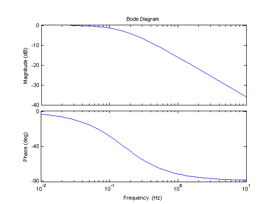
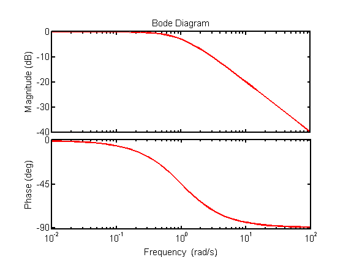

Extras: MATLAB Tips & Tricks
Matlab and Simulink are remarkably powerful tools, and once you're familiar with them, most tasks are for the most part straightforward and intuitive. Recent versions of the software provide many usesful toolboxes and GUI interfaces to simplify your work. However, there are still a few things that can be tricky to accomplish. This page provides a list of helpful tips and tricks that should come in handly as you work through these control tutorials and elsewhere.
Contents
Changing the Frequency Units on the Bode Plots
To change between Hertz (Hz) and radians per second (rad/s) on the bode plot, use the following commands:
s = tf('s'); G = 1/(s+1); options = bodeoptions; options.FreqUnits = 'Hz'; % or 'rad/second', 'rpm', etc. figure(1) bode(G,options);
Please refer to the Matlab help page on bodeoptions for more details and optional parameters.
Getting Magnitude and Phase Data for a System
The Bode plot of a system, , shows the magnitude, (in dB), and phase (degrees) over a range of fregencies. Often it is neccesary to access this frequency response data directly, which is accomplished easily using the following commands:
win = logspace(-2,2,5) [mag,phase,wout] = bode(G,win); size(wout) size(mag) size(phase)
win =
0.0100 0.1000 1.0000 10.0000 100.0000
ans =
5 1
ans =
1 1 5
ans =
1 1 5
where win is the input frequency vector in rad/s, mag is the magnitude in absolute units (i.e. not in dB), phase is the phase in degrees, and wout is the output frequencies at which the response was evaulated, useful for instance if you let MATLAB automatically choose the frequency vector by specifying only the range, win = {wmin, wmax}.
You'll notice that though wout is a standard (n x 1) column vector, the magnitude and phase are actually (1 x 1 x n). This is because the bode command accepts transfer function matrices in which case the (i,j,k) element of magnitude and phase corresponds to the jth input and ith output. For the SISO systems we most often encounter, i = j =1, these singleton dimensions are an inconvenience for matrix operatione, etc. Fortunately MATLAB offers the function, squeeze, to fix just this problem:
mag = squeeze(mag) phase = squeeze(phase)
mag =
1.0000
0.9950
0.7071
0.0995
0.0100
phase =
-0.5729
-5.7106
-45.0000
-84.2894
-89.4271
Changing Font Size and Line Width in Figures
MATLAB is a wonderful tool for visualizing data and generating figures for papers and presentations; however, the default appearance of these figures is not always sufficient for your needs. Fortunately, MATLAB allows you to change nearly every property of the figure to your liking. Here we demonstrate two possible changes that are commonly required.
To change the font size of all text in a figure (titles, axis labels, legends, etc.) we need to search for all axes and text objects using findall and change their properties using set. This is the easiest way since figures may containt multiple axes, e.g. bode, each with their own font size properties and furthermore MATLAB handles titles and axes labels separately from tick marks. Changing line width is treated in a similar fashion, and other properties (e.g. color) can be changed at the same time as shown:
figure(2) bode(G) % Set title, axes labels, and legend font size set(findall(gcf,'Type','text'),'FontSize',11) % Set data line width and color set(findall(gcf,'Type','line'),'LineWidth',2,'Color','red') % Set axes tick label font size, color, and line width set(findall(gcf,'Type','axes'),'FontSize',11,'LineWidth',2,'XColor','black','YColor','black')
Please refer to the following pages to see all properties that can be modified for figures and axes.